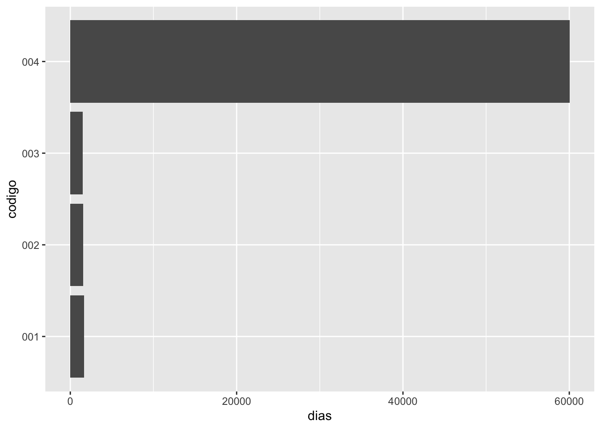
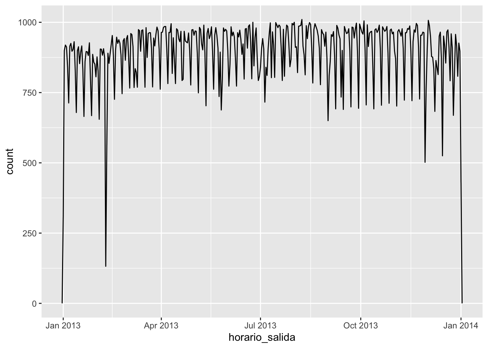
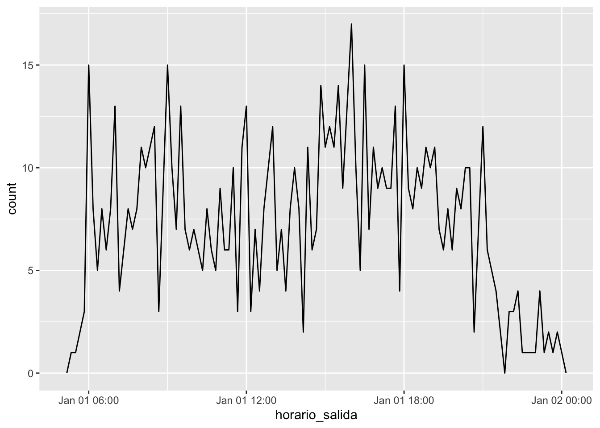

Fecha de la ultima revisión
## [1] "2021-04-27"El tema proviene de los siguientes sitios.
English: https://r4ds.had.co.nz/dates-and-times.html
Español: https://es.r4ds.hadley.nz/fechas-y-horas.html
https://github.com/edgararuiz/guias-rapidas/blob/master/fechas.pdf
library(tidyverse)
library(lubridate)lubridateLa función today() regresa la fecha de hoy, similar a Sys.date()
today()## [1] "2021-04-27"Usames tibble(), del paquete tibble, para crear una tabla manualmente
fechas <- tribble(
~ codigo, ~ fecha,
"001", "01/01/2019 00:00:00",
"002", "31/03/2019 01:05:00",
"003", "14/06/2019 20:00:00",
"004", "01/03/1859 11:32:13"
)
fechas## # A tibble: 4 x 2
## codigo fecha
## <chr> <chr>
## 1 001 01/01/2019 00:00:00
## 2 002 31/03/2019 01:05:00
## 3 003 14/06/2019 20:00:00
## 4 004 01/03/1859 11:32:13Hay varias opciones para convertir texto a fechas, el más usado es mdy_hms(), pero en este caso el formato utilizado no funciona bien.
fechas %>%
mutate(fecha = mdy_hms(fecha))## # A tibble: 4 x 2
## codigo fecha
## <chr> <dttm>
## 1 001 2019-01-01 00:00:00
## 2 002 NA
## 3 003 NA
## 4 004 1859-01-03 11:32:13Ya que el día es el primero, y no el mes, usamos dmy_hms()
nueva_fechas <- fechas %>%
mutate(fecha = dmy_hms(fecha))
nueva_fechas## # A tibble: 4 x 2
## codigo fecha
## <chr> <dttm>
## 1 001 2019-01-01 00:00:00
## 2 002 2019-03-31 01:05:00
## 3 003 2019-06-14 20:00:00
## 4 004 1859-03-01 11:32:13lubridate tiene varias funciones para extraer partes de la fecha, por ejemplo: año, mes, día, hora, minuto, y quatrimestre.
nueva_fechas %>%
mutate(a = year(fecha),
m = month(fecha),
d = day(fecha),
h = hour(fecha),
mn = minute(fecha),
q = quarter(fecha)
)## # A tibble: 4 x 8
## codigo fecha a m d h mn q
## <chr> <dttm> <dbl> <dbl> <int> <int> <int> <int>
## 1 001 2019-01-01 00:00:00 2019 1 1 0 0 1
## 2 002 2019-03-31 01:05:00 2019 3 31 1 5 1
## 3 003 2019-06-14 20:00:00 2019 6 14 20 0 2
## 4 004 1859-03-01 11:32:13 1859 3 1 11 32 1Las funciones round_date(), ceiling_date() y floor_date() permiten redondear la fecha al número más cercano de la unidad especificada
nueva_fechas %>%
mutate(
redondear = round_date(fecha, unit = " month"),
techo = ceiling_date(fecha, unit = "day"),
suelo = floor_date(fecha, unit = "month")
)## # A tibble: 4 x 5
## codigo fecha redondear techo
## <chr> <dttm> <dttm> <dttm>
## 1 001 2019-01-01 00:00:00 2019-01-01 00:00:00 2019-01-01 00:00:00
## 2 002 2019-03-31 01:05:00 2019-04-01 00:00:00 2019-04-01 00:00:00
## 3 003 2019-06-14 20:00:00 2019-06-01 00:00:00 2019-06-15 00:00:00
## 4 004 1859-03-01 11:32:13 1859-03-01 00:00:00 1859-03-02 00:00:00
## # … with 1 more variable: suelo <dttm>La función interval() crea un objeto R de intervalo de tiempo. En este caso, el intervalo entro la fecha en la tabla, y el día de hoy. Nota que esto puede ser muy util si quiere calcular la cantidad de tiempo entre dos fechas.
nueva_fechas %>%
mutate(intervalo = interval(fecha, today()))## # A tibble: 4 x 3
## codigo fecha intervalo
## <chr> <dttm> <Interval>
## 1 001 2019-01-01 00:00:00 2019-01-01 00:00:00 UTC--2021-04-27 UTC
## 2 002 2019-03-31 01:05:00 2019-03-31 01:05:00 UTC--2021-04-27 UTC
## 3 003 2019-06-14 20:00:00 2019-06-14 20:00:00 UTC--2021-04-27 UTC
## 4 004 1859-03-01 11:32:13 1859-03-01 11:32:13 UTC--2021-04-27 UTCint_length() regresa el número de segundos dentro del intervalo
nueva_fechas %>%
mutate(
intervalo = interval(fecha, today()),
segundos = int_length(intervalo)
)## # A tibble: 4 x 4
## codigo fecha intervalo segundos
## <chr> <dttm> <Interval> <dbl>
## 1 001 2019-01-01 00:00:00 2019-01-01 00:00:00 UTC--2021-04-27 UTC 73180800
## 2 002 2019-03-31 01:05:00 2019-03-31 01:05:00 UTC--2021-04-27 UTC 65487300
## 3 003 2019-06-14 20:00:00 2019-06-14 20:00:00 UTC--2021-04-27 UTC 58939200
## 4 004 1859-03-01 11:32:13 1859-03-01 11:32:13 UTC--2021-04-27 UTC 5117171267El operador %--% simplifica el cálculo del intervalo
nueva_fechas %>%
mutate(intervalo = fecha %--% today())## # A tibble: 4 x 3
## codigo fecha intervalo
## <chr> <dttm> <Interval>
## 1 001 2019-01-01 00:00:00 2019-01-01 00:00:00 UTC--2021-04-27 UTC
## 2 002 2019-03-31 01:05:00 2019-03-31 01:05:00 UTC--2021-04-27 UTC
## 3 003 2019-06-14 20:00:00 2019-06-14 20:00:00 UTC--2021-04-27 UTC
## 4 004 1859-03-01 11:32:13 1859-03-01 11:32:13 UTC--2021-04-27 UTCPara saber el número del días, divida el intervalo por la función que corresponde a días, days()
nueva_fechas %>%
mutate(dias = fecha %--% today() / days())## # A tibble: 4 x 3
## codigo fecha dias
## <chr> <dttm> <dbl>
## 1 001 2019-01-01 00:00:00 847
## 2 002 2019-03-31 01:05:00 758.
## 3 003 2019-06-14 20:00:00 682.
## 4 004 1859-03-01 11:32:13 59227.Intervalo entre una lista de fecha y otra fecha y hora
nueva_fechas %>%
mutate(dias = fecha %--% "2020-01-01 00:00:00" / days())## # A tibble: 4 x 3
## codigo fecha dias
## <chr> <dttm> <dbl>
## 1 001 2019-01-01 00:00:00 365
## 2 002 2019-03-31 01:05:00 276.
## 3 003 2019-06-14 20:00:00 200.
## 4 004 1859-03-01 11:32:13 58745.Usa esta funtión y calcula el numero de dia que ha transcurido entre el dia de su nacimiento y el dia de hoy
dias = "2018-08-14 00:00:00" %--% today() / milliseconds()
dias## [1] 85276800000Los resultados se pueden visualizar usando ggplot2
nueva_fechas %>%
mutate(dias = fecha %--% today() / days()) %>%
ggplot() +
geom_col(aes(codigo, dias)) +
coord_flip()
as.duration() crea un objecto en R que contiene la duración del intervalo de tiempo.
nueva_fechas %>%
mutate(desde_hoy = as.duration(fecha %--% today()))## # A tibble: 4 x 3
## codigo fecha desde_hoy
## <chr> <dttm> <Duration>
## 1 001 2019-01-01 00:00:00 73180800s (~2.32 years)
## 2 002 2019-03-31 01:05:00 65487300s (~2.08 years)
## 3 003 2019-06-14 20:00:00 58939200s (~1.87 years)
## 4 004 1859-03-01 11:32:13 5117171267s (~162.15 years)El objeto de duración de tiempo se puede filtrar fácilmente basado en una variedad de tipo de tiempos. En este caso, semanas. dweeks() crea un objeto de duración de la largura especificada
nueva_fechas %>%
mutate(desde_hoy = as.duration(fecha %--% today())) %>%
filter(desde_hoy > dyears(100))## # A tibble: 1 x 3
## codigo fecha desde_hoy
## <chr> <dttm> <Duration>
## 1 004 1859-03-01 11:32:13 5117171267s (~162.15 years)Otra opción es ddays().
nueva_fechas %>%
mutate(desde_hoy = as.duration(fecha %--% today())) %>%
filter(desde_hoy < ddays(700)) # Note that you filter for the number of days that have acculmulated## # A tibble: 1 x 3
## codigo fecha desde_hoy
## <chr> <dttm> <Duration>
## 1 003 2019-06-14 20:00:00 58939200s (~1.87 years)today()## [1] "2021-04-27"now()## [1] "2021-04-27 21:33:11 AST"ymd_hms()
ymd_hm()
ymd_h()
ydm_hms()
ydm_hm()
etc
x =c("2012.1", "1970.4")
yq(x)## [1] "2012-01-01" "1970-10-01"yq("2012.1")## [1] "2012-01-01"Cuidado con el paquete hms que tiene funciones igual como lubridate (hms, hm, y ms)
library(datos)
head(vuelos)## # A tibble: 6 x 19
## anio mes dia horario_salida salida_programada atraso_salida
## <int> <int> <int> <int> <int> <dbl>
## 1 2013 1 1 517 515 2
## 2 2013 1 1 533 529 4
## 3 2013 1 1 542 540 2
## 4 2013 1 1 544 545 -1
## 5 2013 1 1 554 600 -6
## 6 2013 1 1 554 558 -4
## # … with 13 more variables: horario_llegada <int>, llegada_programada <int>,
## # atraso_llegada <dbl>, aerolinea <chr>, vuelo <int>, codigo_cola <chr>,
## # origen <chr>, destino <chr>, tiempo_vuelo <dbl>, distancia <dbl>,
## # hora <dbl>, minuto <dbl>, fecha_hora <dttm>vuelos %>%
select(anio, mes, dia, hora, minuto) %>%
mutate(salida = make_datetime(anio, mes, dia, hora, minuto))## # A tibble: 336,776 x 6
## anio mes dia hora minuto salida
## <int> <int> <int> <dbl> <dbl> <dttm>
## 1 2013 1 1 5 15 2013-01-01 05:15:00
## 2 2013 1 1 5 29 2013-01-01 05:29:00
## 3 2013 1 1 5 40 2013-01-01 05:40:00
## 4 2013 1 1 5 45 2013-01-01 05:45:00
## 5 2013 1 1 6 0 2013-01-01 06:00:00
## 6 2013 1 1 5 58 2013-01-01 05:58:00
## 7 2013 1 1 6 0 2013-01-01 06:00:00
## 8 2013 1 1 6 0 2013-01-01 06:00:00
## 9 2013 1 1 6 0 2013-01-01 06:00:00
## 10 2013 1 1 6 0 2013-01-01 06:00:00
## # … with 336,766 more rowsvuelos %>%
select(anio, mes, dia, hora, minuto) %>%
mutate(salida2 = make_date(anio, mes, dia))## # A tibble: 336,776 x 6
## anio mes dia hora minuto salida2
## <int> <int> <int> <dbl> <dbl> <date>
## 1 2013 1 1 5 15 2013-01-01
## 2 2013 1 1 5 29 2013-01-01
## 3 2013 1 1 5 40 2013-01-01
## 4 2013 1 1 5 45 2013-01-01
## 5 2013 1 1 6 0 2013-01-01
## 6 2013 1 1 5 58 2013-01-01
## 7 2013 1 1 6 0 2013-01-01
## 8 2013 1 1 6 0 2013-01-01
## 9 2013 1 1 6 0 2013-01-01
## 10 2013 1 1 6 0 2013-01-01
## # … with 336,766 more rowsnames(vuelos)## [1] "anio" "mes" "dia"
## [4] "horario_salida" "salida_programada" "atraso_salida"
## [7] "horario_llegada" "llegada_programada" "atraso_llegada"
## [10] "aerolinea" "vuelo" "codigo_cola"
## [13] "origen" "destino" "tiempo_vuelo"
## [16] "distancia" "hora" "minuto"
## [19] "fecha_hora"hacer_fechahora_100 <- function(anio, mes, dia, tiempo) {
make_datetime(anio, mes, dia, tiempo %/% 100, tiempo %% 100)
}
vuelos_dt <- vuelos %>%
filter(!is.na(horario_salida), !is.na(horario_llegada)) %>%
mutate(
horario_salida = hacer_fechahora_100(anio, mes, dia, horario_salida),
horario_llegada = hacer_fechahora_100(anio, mes, dia, horario_llegada),
salida_programada = hacer_fechahora_100(anio, mes, dia, salida_programada),
llegada_programada = hacer_fechahora_100(anio, mes, dia, llegada_programada)
) %>%
select(origen, destino, starts_with("atraso"), starts_with("horario"), ends_with("programada"), tiempo_vuelo)
head(vuelos_dt)## # A tibble: 6 x 9
## origen destino atraso_salida atraso_llegada horario_salida
## <chr> <chr> <dbl> <dbl> <dttm>
## 1 EWR IAH 2 11 2013-01-01 05:17:00
## 2 LGA IAH 4 20 2013-01-01 05:33:00
## 3 JFK MIA 2 33 2013-01-01 05:42:00
## 4 JFK BQN -1 -18 2013-01-01 05:44:00
## 5 LGA ATL -6 -25 2013-01-01 05:54:00
## 6 EWR ORD -4 12 2013-01-01 05:54:00
## # … with 4 more variables: horario_llegada <dttm>, salida_programada <dttm>,
## # llegada_programada <dttm>, tiempo_vuelo <dbl>vuelos_dt %>%
ggplot(aes(horario_salida)) +
geom_freqpoly(binwidth = 86400) # 86400 segundos = 1 día
vuelos_dt %>%
filter(horario_salida < ymd(20130102)) %>%
ggplot(aes(horario_salida)) +
geom_freqpoly(binwidth = 600) # 600 segundos = 10 minutos
ymd(c("2010-10-10", "bananas"))## [1] "2010-10-10" NAd1 <- "Jan 1, 2010"
mdy(d1)## [1] "2010-01-01"d2 <- "2015-Mar-07"
ymd(d2)## [1] "2015-03-07"d3 <- "06-Jun-2017"
dmy(d3)## [1] "2017-06-06"d4 <- c("Aug 19 (2015)", "Jul 1 (2015)")
mdy(d4)## [1] "2015-08-19" "2015-07-01"d5 <- "12/30/14" # Diciembre 30, 2014
mdy(d5)## [1] "2014-12-30"d6 <- "ene 1, 2010"
mdy(d6)## [1] NAd7 <- c("Agosto 19 (2015)", "Julio 1 (2015)")
mdy(d7)## [1] NA NAd1## [1] "Jan 1, 2010"d2## [1] "2015-Mar-07"d3## [1] "06-Jun-2017"d4## [1] "Aug 19 (2015)" "Jul 1 (2015)"d5## [1] "12/30/14"d6## [1] "ene 1, 2010"d7## [1] "Agosto 19 (2015)" "Julio 1 (2015)"mdy(d1)## [1] "2010-01-01"ymd(d2)## [1] "2015-03-07"dmy(d3)## [1] "2017-06-06"mdy(d4)## [1] "2015-08-19" "2015-07-01"mdy(d5)## [1] "2014-12-30"mdy(d6)## [1] NAmdy(d7)## [1] NA NAHacer los ejercicios en la sección 16.2.4 del libro en español
year()
month()
mday()
yday()
wday()
ceiling_date()
floor_date()
round_date()
Hacer los ejercicios en la sección 16.3.4 del libro en español
# ¿Qué edad tiene Charles Darwin? February 12, 1809
edad_h <- today() - ymd("1809-02-12")
edad_h <- today() - ymd(18090212)
edad_h## Time difference of 77506 daysas.duration(edad_h)## [1] "6696518400s (~212.2 years)"x=as.duration(edad_h)Otras funciones de duración
dseconds(15)## [1] "15s"dminutes(10)## [1] "600s (~10 minutes)"dhours(c(12, 24))## [1] "43200s (~12 hours)" "86400s (~1 days)"ddays(0:5)## [1] "0s" "86400s (~1 days)" "172800s (~2 days)"
## [4] "259200s (~3 days)" "345600s (~4 days)" "432000s (~5 days)"dweeks(3)## [1] "1814400s (~3 weeks)"dyears(1)## [1] "31557600s (~1 years)"# Puede agragar periodos de tiempo
2 * dyears(1)## [1] "63115200s (~2 years)"dyears(1) + dweeks(12) + dhours(15)## [1] "38869200s (~1.23 years)"ayer <- today() - ddays(1)
anio_pasado <- today() - dyears(1)
ayer## [1] "2021-04-26"anio_pasado## [1] "2020-04-26 18:00:00 UTC"una_pm <- ymd_hms("2016-03-12 13:00:00", tz = "America/New_York")
una_pm## [1] "2016-03-12 13:00:00 EST"#> [1] "2016-03-12 13:00:00 EST"
una_pm + ddays(1)## [1] "2016-03-13 14:00:00 EDT"#> [1] "2016-03-13 14:00:00 EDT"seconds(15)## [1] "15S"#> [1] "15S"
minutes(10)## [1] "10M 0S"#> [1] "10M 0S"
hours(c(12, 24))## [1] "12H 0M 0S" "24H 0M 0S"#> [1] "12H 0M 0S" "24H 0M 0S"
days(7)## [1] "7d 0H 0M 0S"#> [1] "7d 0H 0M 0S"
months(1:6)## [1] "1m 0d 0H 0M 0S" "2m 0d 0H 0M 0S" "3m 0d 0H 0M 0S" "4m 0d 0H 0M 0S"
## [5] "5m 0d 0H 0M 0S" "6m 0d 0H 0M 0S"#> [1] "1m 0d 0H 0M 0S" "2m 0d 0H 0M 0S" "3m 0d 0H 0M 0S" "4m 0d 0H 0M 0S"
#> [5] "5m 0d 0H 0M 0S" "6m 0d 0H 0M 0S"
weeks(3)## [1] "21d 0H 0M 0S"#> [1] "21d 0H 0M 0S"
years(1)## [1] "1y 0m 0d 0H 0M 0S"#> [1] "1y 0m 0d 0H 0M 0S"10 * (months(6) + days(1))## [1] "60m 10d 0H 0M 0S"#> [1] "60m 10d 0H 0M 0S"
days(50) + hours(25) + minutes(2)## [1] "50d 25H 2M 0S"#> [1] "50d 25H 2M 0S"# Un año bisiesto
ymd("2016-01-01") + dyears(1)## [1] "2016-12-31 06:00:00 UTC"#> [1] "2016-12-31 06:00:00 UTC"
ymd("2016-01-01") + years(1)## [1] "2017-01-01"#> [1] "2017-01-01"
# Horarios de verano
una_pm + ddays(1)## [1] "2016-03-13 14:00:00 EDT"#> [1] "2016-03-13 14:00:00 EDT"
una_pm + days(1)## [1] "2016-03-13 13:00:00 EDT"#> [1] "2016-03-13 13:00:00 EDT"10 * (months(6) + days(1))## [1] "60m 10d 0H 0M 0S"#> [1] "60m 10d 0H 0M 0S"
days(50) + hours(25) + minutes(2)## [1] "50d 25H 2M 0S"#> [1] "50d 25H 2M 0S"Hacer los ejercicios en la sección 16.4.5 del libro en español
Seleccionar 3 archivos de los vuelos que salen o llegan a PR, (el codigo del aeropuerto es “SJU”) de la base de datos de https://www.transtats.bts.gov/DL_SelectFields.asp?Table_ID=236 Pueden ser el mismo mes en 3 diferente años o 3 diferentes mese en el mismo año.
Repite la mayoría de los análisis enseñado arriba (como practica).
Evaluar el tiempo de retrazo de los vuelos que salen de SJU en cada periodo seleccionado, y haz una gráfica para visualizar el patrón
Cual es el diá preferible para no tener retraso
Cual es la mejor hora de salida para no tener retraso
Compara por lo menos 3 diferentes lineas saliendo de SJU y el periodo de retrazo.